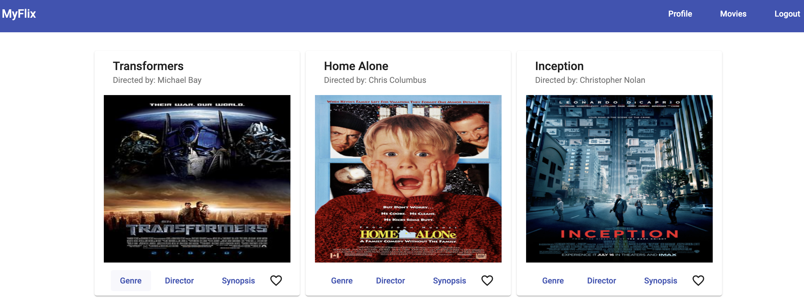

Using Angular, build the client-side for an application called myFlix based on its existing server-side code (REST API and database), with supporting documentation.
It is a small movie app that includes authentication, profiles where you can change details and unregister, add favourite movie, and delete a favourite movie on your profile list.

In order to use the app, register first and if you want to see your added favourite movie list go to your profile.
npm installng serveThe APP is live at mirjsolution.github.io/myflix-clent-angular